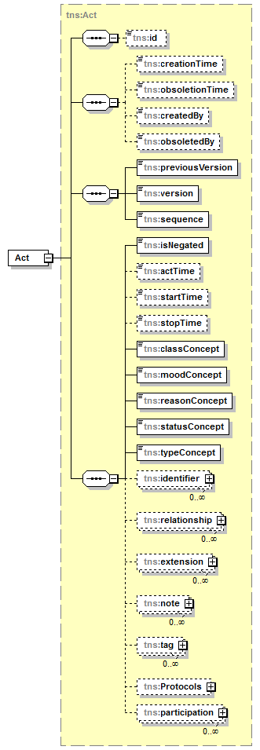

| diagram |  | ||||||
| namespace | http://openiz.org/model | ||||||
| type | tns:Act | ||||||
| properties |
|
||||||
| children | tns:id tns:creationTime tns:obsoletionTime tns:createdBy tns:obsoletedBy tns:previousVersion tns:version tns:sequence tns:isNegated tns:actTime tns:startTime tns:stopTime tns:classConcept tns:moodConcept tns:reasonConcept tns:statusConcept tns:typeConcept tns:identifier tns:relationship tns:extension tns:note tns:tag tns:Protocols tns:participation | ||||||
| source | <xs:element name="Act" type="tns:Act" nillable="true"/> |